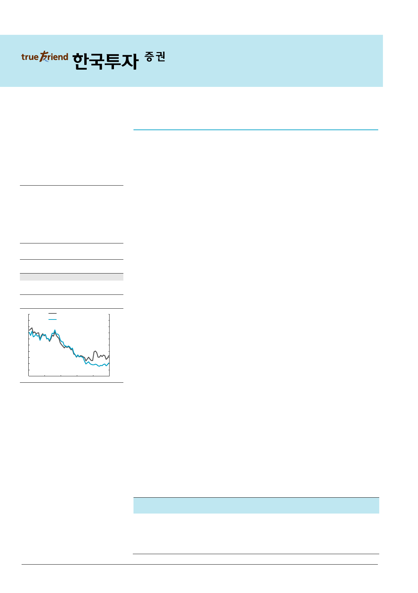

기업 Comment
2017.2.1
삼성중공업(010140)
매수(유지)
미청구공사 분석
목표주가: 13,000원(유지)
Stock Data
KOSPI(1/26)
주가(1/26)
시가총액(십억원)
발행주식수(백만)
52주 최고/최저가(원)
일평균거래대금(6개월, 백만원)
유동주식비율/외국인지분율(%)
주요주주(%) 삼성전자 외 8 인
2,084
10,600
4,134
390
11,240/7,238
18,516
62.0/18.7
23.2
주가상승률
절대주가(%)
상대주가(%p)
1개월
14.0
11.7
6개월
18.6
15.8
12개월
22.3
10.9
12MF PBR 추이
2.0
(배)
1.8
12MF PBR (좌)
삼성중공업 주가 (우)
1.6
1.4
1.2
1.0
0.8
0.6
0.4
0.2
0.0
Feb-12
Feb-13
Feb-14
Feb-15
자료: WISEfn 컨센서스
(원)
Feb-16
50,000
45,000
40,000
35,000
30,000
25,000
20,000
15,000
10,000
5,000
0
미청구공사 5조원 중, 해양설비는 0.3조원에 불과
최근 삼성중공업의 미청구공사 관련 보도로 우려가 제기된 상황이라 미청구공사 현황을
분석해 보았다. 2016년 말 미청구공사는 5.0조원, 매출대비 비율은 48%다. 통상 미청구
공사는 heavy tail 방식의 선박을 건조할 때, 인도 시 약 40%의 대금을 한번에 수취하기
때문에 발생한다. 따라서 미청구공사는 인도 전 선가의 50% 이상 발생한다. 미청구공사의
구성은 상선 1.6조원, 시추설비(드릴쉽) 3.1조원, 해양설비 0.3조원으로 대부분 heavy
tail 입금구조인 상선과 시추설비에서 발생했다.
시장이 우려하는 것은 매출과 이익의 과대계상 리스크인데 2013~2014년 건설/조선업종
의 미청구공사 급증과 부실화가 여기서 발생했기 때문이다. 그러나 삼성중공업은 확정되
지 않은 change order를 도급액으로 산정하지 않는다. Ichthys, Egina 등 현안 해양 프로
젝트에서의 미청구공사는 ‘0’ 상태다.
2017년 삼성중공업의 인도척수는 2016년 27척의 2배 수준인 48척에 달해, 미청구공사는
인도와 함께 빠르게 감소할 전망이다. 2017년 Seadrill 드릴쉽 2척의 인도 지연을 가정하
더라도 약 2조원의 영업현금흐름이 예상되는 것도 LNG선과 컨테이너, Semi-rig등의 인
도와 잔금회수에 따른 것이다. 삼성중공업은 특히 1) 최근 Ensco 드릴쉽의 중도금 수취
합의로 미청구공사가 2,500억원 감소했으나 1월 합의로 2016년 말 미청구공사에는 반영
되지 않았고, 2) 하반기 Statoil의 Cat-J 세미리그 2기의 인도가 예정돼 있어 여기에서만
1.2조원의 미청구공사 감소와 현금흐름 개선이 예상된다.
Heavy tail 방식의 선박 인도, 2017년 최대로 현금흐름 개선
미청구공사 비교사례로 상선 pure player인 현대미포조선 사례를 보자. 현대미포의 2014
년 미청구공사는 1.1조원으로 최대치였다. 2013년 30억달러의 수주 이후, 2015년 인도
예정 선박(상선이므로 대부분 heavy tail)이 무려 81척에 달해 이에 대한 건조 증가로 미
청구공사 역시 급증했기 때문이다. 2015년 인도가 진행되며 미청구공사는 급감, 2016년
3분기 미청구공사는 정점대비 4,430억원 줄어든 6,170억원이다. 만약 공사물량만큼 대금
을 회수하는 해양설비에서 미청구공사가 장기간 증가한다면 리스크로 간주해야 하나, 상
선의 미청구공사는 2~3년 주기로 상승과 하락을 반복하는 것이 일반적이다.
이경자 3276-6155
kyungja.lee@truefriend.com
물론 수주가 급감한 상태에서 미청구공사 증가는 초과청구공사(선수금) 유입도 없는 상황
이라 1~2년간은 운전자금에 부정적이다. 그러나 이것이 부실의 징후는 아니다. 올해 48
척의 선박 인도는 물론 신규수주 증가로 B/S 개선과 유동성 개선을 예상한다.
매출액 영업이익 순이익
EPS 증감률 EBITDA PER EV/EBITDA PBR ROE DY
(십억원) (십억원) (십억원)
(원)
(%) (십억원)
(x)
(x) (x) (%) (%)
2014A 12,879
183
149
693 (76.2)
467 25.0 14.8 0.6 2.6 1.4
2015A
9,714 (1,502) (1,205) (5,879)
NM (1,198) NM
NM 0.4 (24.7)
-
2016F 10,414
(147)
(121) (477)
NM
158 NM 36.5 0.6 (2.4)
-
2017F
7,107
130
108
296
NM
429 35.8 10.2 0.7 1.8
-
2018F
6,184
196
158
434 46.6
493 24.4 10.0 0.6 2.5
-
주: 순이익, EPS 등은 지배주주지분 기준